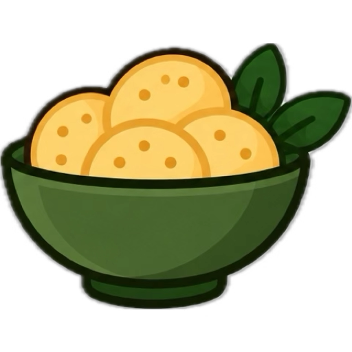

Una papa, mil ideas
¿Sos del equipo puré, ñoquis o croquetas? Elegí la receta que más te tiente y animate a prepararla.
Especialidades Destacadas
¿Por qué papas?
-
Fáciles
Recetas con pasos sencillos para cocinar en casa.
-
Para todos
Al horno, en puré o croquetas: hay una para cada gusto.
-

Siempre ricas
Un ingrediente versátil que combina con muchas comidas.